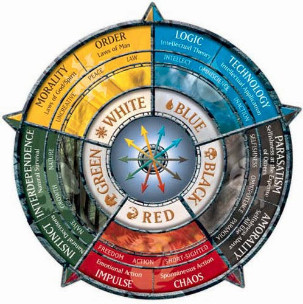

A roda das cores
A roda das cores é um sistema de tendência em que as cinco cores possuem tanto encarnações literais e filosofias não-literais; ou seja, são tanto ideologias como forças que modificam o cosmos. A parte que concerne às pessoas é a segunda forma, a forma de ideologias: A cor de tendência de uma pessoa é como ele se encaixa no mundo, não como uma limitação em seu comportamento. A pessoa não age de uma forma por que é de certa cor; ela é considerada de certa cor por ágil de tal forma.
